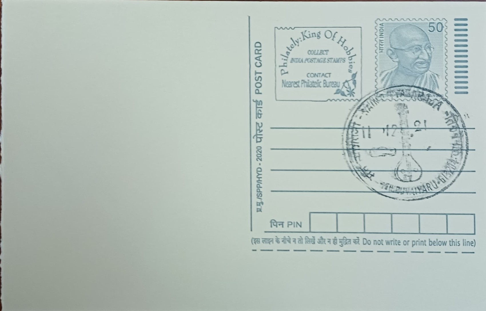

Saint Tyagaraja
துறவி தியாகராஜர்


Sadguru Tyagaraja was born on 4 May 1767 in Tiruvarur to Ramabrahmam, a Sanskrit and Ramayana scholar, and his wife Seethamma, into a family of Telugu-speaking Brahmins who had settled in the Thanjavur region. The family later moved to Thiruvaiyaru, a temple town on the southern bank of the river Kaveri, which became the composer's lifelong home and the place with which his name and legacy are now permanently identified. He displayed musical aptitude early, receiving training under Sonti Venkataramanayya, and is said to have composed his first known kriti, in praise of Rama, around the age of thirteen, setting the devotional direction his entire oeuvre would follow.
Tyagaraja is venerated as one of the Trinity of Carnatic Music, alongside Muthuswami Dikshitar and Syama Sastri, the three composers credited with shaping the classical structure and repertoire of South Indian art music as it is taught and performed today. His significance rests not merely on the volume of his output but on his introduction of techniques such as sangati, the elaboration of a melodic phrase through successive melodic variations within a single kriti, a device that became a defining feature of Carnatic composition. Of the thousands of kritis attributed to him, roughly seven hundred are commonly performed today, nearly all composed in Telugu with a smaller number in Sanskrit, almost all addressed to Rama as his chosen deity.
Among his works are two dance dramas, Prahlada Bhakti Vijayam and Nauka Charitram, which narrate devotional episodes through song and were conceived for performance rather than private singing alone, reflecting his engagement with both lyrical and dramatic musical forms. He led a life of deliberate material simplicity in Thiruvaiyaru, subsisting on alms (unchavritti) and declining invitations to court patronage, including a reported offer from the Thanjavur royal establishment, choosing instead to compose and perform within a close circle of disciples. He died on 6 January 1847, observed by tradition as having entered jeeva samadhi, and was interred on the Kaveri riverbank at Thiruvaiyaru, the site that subsequently developed into the shrine now associated with his memory.
The most widely recognised single event tied to his legacy is the Pancharatna Kritis, a set of five compositions in Sanskrit-inflected Telugu composed in praise of Rama, which are traditionally rendered in unison by massed choirs of musicians during the annual commemorations at his samadhi, a practice that has become the emblematic centrepiece of the festival observed in his honour. The Thyagaraja Aradhana was first organised in its modern form in 1908 by groups of his disciples, who institutionalised an annual day of commemorative singing on Pushya Bahula Panchami, the day on which he is believed to have attained samadhi, drawing in subsequent decades growing numbers of vocalists and instrumentalists from across South India.
The festival now runs over five days each January at the samadhi complex in Thiruvaiyaru, combining Harikatha discourses and solo and ensemble Carnatic concerts, with the massed rendering of the Pancharatna Kritis on the main day broadcast live on Doordarshan's national channel, extending the observance to audiences well beyond the town itself. Organisation of the event today involves local trusts and committees working with government cultural bodies to manage the large seasonal influx of performers and devotees to what is otherwise a modest riverside town. Thiruvaiyaru's identity, and that of its post office, remains tied to this annual convergence of Carnatic musicians, who continue to treat the samadhi grounds as the tradition's most direct living link to the saint who composed there.
| Date of Introduction | January 20, 1976 |
|---|---|
| Address | Sub Postmaster, |
| Thiruvaiyaru SO, | |
| Thanjavur (dt.), Tamil Nadu - 613204. |